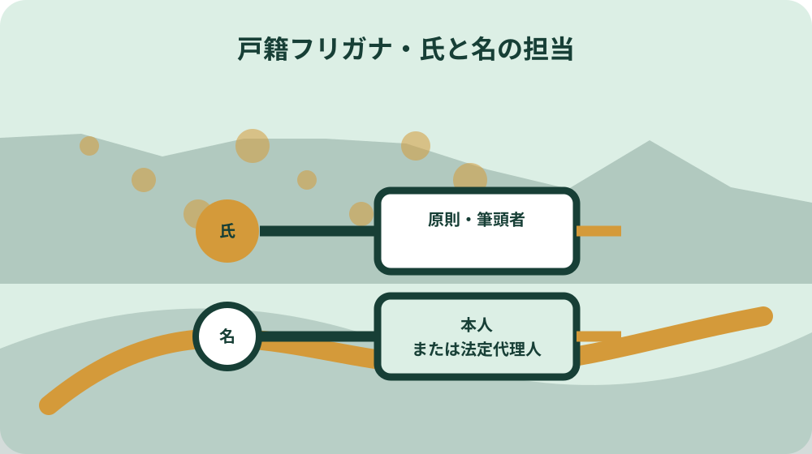
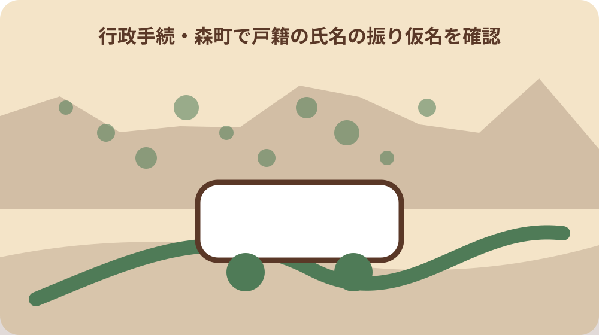

先に結論を確認する
この記事の答え：通知に記載された全員を一人ずつ表へ移し、氏は原則として戸籍の筆頭者、名は本人または親権者等の法定代理人という別の担当列で確認します。2026年5月25日の初回期限は終了しているため、通知だけで現在の戸籍記載を決めず、届出控えの有無と森町住民生活課への照会要否も各行に残します。
森町で最初に照合する条件：2025年の圧着はがきを一通単位で保管して終えず、記載された人ごとに氏、名、通知表記、本人確認結果を別行へ転記する。
通知一通を家族一人ずつの行へ分ける
戸籍フリガナの通知を確認するときは、はがき一通を一件として済ませず、記載された人を一人ずつ別の行へ移します。広報もりまち2025年6月号は、森町が圧着はがきを発送し、同じ戸籍・住所なら一通に最大四名まで記載する形式だと説明しています。一通の中でも、名の読みが正しい人と相違する人が混在し得るためです。
表の左端には家族番号、氏名、戸籍上の続柄ではなく通知に載った順番、通知された氏のフリガナ、通知された名のフリガナを書きます。通知の文字を転記する列と、家族が普段使っている読みを書く列は隣り合わせにし、同じなら丸、違えば相違箇所を一文字単位で囲みます。転記者の推測で濁点や長音を補いません。
次に、本人が読んで確認した日、確認できない理由、連絡した家族を書きます。離れて暮らす成人の名を同居家族が習慣だけで確定すると、本人が公的手続で使う読みとずれる可能性があります。本人へ通知の必要部分を安全に示し、回答を受けた日を記録します。通知全体の画像を無条件に共有する方法は勧めません。
この家族別判定表は、公的様式ではなく大石の実務提案です。目的は届出を代行することではなく、誰の氏と名を誰が確認し、何が未確認かを一枚で見えるようにすることです。公的な届出人と現在の変更方法は、森町公式と住民生活課の案内を優先します。
通知・届出控え・現在記載を三列にする
2026年8月の今、2025年の通知だけを見て現在の戸籍フリガナだと断定することはできません。通知後に本人等が届出をした可能性があり、届出をしなかった場合には市区町村長による記載の段階へ進んでいるからです。表は『通知された読み』『期限までの届出控え』『現在の戸籍記載の確認』という三列に分けます。
通知列には、はがきの発行元、受け取った時期、通知された文字を転記します。届出控え列には、届出をした人、対象が氏か名か、提出方法、提出日、受付を確認できる資料の有無を書きます。マイナポータル、窓口、郵送のどれだったか思い出せない場合は、空欄を推測で埋めず『控え未確認』とします。
現在記載列は、必要な公的証明を取得した、または森町へ照会して確認方法を聞いた後に記入します。古い通知と現在の証明は役割が異なります。銀行、勤務先、旅券など別制度の表記が連動して変わると決めつけず、提出先ごとに必要な確認を分けます。
三列の下に『差がある理由』欄を設けます。通知どおりに記載、期限内届出を反映、期限後に相談中など、確認できた事実だけを書きます。家族の記憶と公的記録が違う場合は、どちらかを消すのではなく、確認待ちとして両方を残す方が照会内容を具体化できます。
氏の担当を原則筆頭者へ割り当てる
森町公式は、氏の振り仮名の届出について原則として戸籍の筆頭者が届出人になると案内しています。家族全員が同じ氏を使っていても、成人一人ずつが自分の氏を別々に届ける表にはしません。氏の行には、戸籍の筆頭者名と、その人が通知当時の戸籍にいたかを記します。
筆頭者は、世帯主や家族内の代表者と同じとは限りません。住民票の世帯主、通知を受け取った人、家計を管理する人を見て筆頭者だと推定せず、通知や戸籍情報で確認します。表には『世帯主』という列を置かず、『戸籍筆頭者』と明記して住所単位の情報と混ぜないようにします。
氏の通知表記に家族の一人だけが違和感を持った場合も、本人の名の問題と同じ処理にしません。氏の読みは同じ戸籍の構成員へ関わるため、誰が届出人となるか、既に届出があったかを住民生活課へ確認します。家族会議で多数決をして決める性質のものではありません。
表では氏の担当欄を一色、名の担当欄を別色にします。この色分けも大石の整理案であり、法令上の様式ではありません。氏について誰が動くかを一本にし、名について各人へ枝分かれさせると、同じ通知に対する責任線を取り違えにくくなります。
筆頭者が除籍されている戸籍は順序を確認する
法務省は、氏のフリガナの届出について、筆頭者が除籍されている場合は配偶者、配偶者も除籍されている場合は子が届出人になると案内していました。単に家族で最年長の人へ担当を移す扱いではありません。
通知当時に筆頭者が死亡していた、婚姻や転籍で戸籍の構成が変わった、といった事情がある行には『筆頭者除籍の可能性』と記します。配偶者や子がいるから自動的に現在も同じ順序で手続できると広げず、当時の戸籍状態と現在の相談手順を森町へ伝えます。
家族別表には、筆頭者、配偶者、子という関係だけでなく、それぞれが対象戸籍から除かれているかを確認する欄を置きます。関係が不明なら、古い戸籍を自己流で読んで担当者を確定せず、戸籍の表示、本籍、筆頭者氏名、対象者氏名をそろえて住民生活課へ尋ねます。
この節で引用した順序は、法務省が初回届出について示した案内です。2026年5月25日後の変更手続へ、その順序をそのまま転用する実務提案ではありません。現在の相談では『通知当時、筆頭者は除籍』『届出控えなし』のように事実を伝え、適用される手順を確認します。
名の担当を本人または法定代理人へ割り当てる
森町公式は、名の振り仮名の届出人を本人または親権者等の法定代理人と案内しています。氏の担当が筆頭者だからといって、筆頭者が同じ戸籍の成人全員の名を自由に届け出る表にはしません。名の列は一人につき一行とし、本人確認と代理関係を分けます。
成人の行では本人を確認担当に置きます。未成年者など法定代理人が関わる行では、親権者等の氏名、関係を確認した資料、本人へ読みを確認した方法を別欄にします。年齢だけから代理権の有無を断定せず、現在の家族関係に事情がある場合は窓口へ相談します。
同じ読みでも表記候補が複数あるときは、普段の呼び方をカタカナへ変換して決めるだけでは足りません。通知の文字、本人が認識する文字、当時の届出控えを並べます。日常の愛称、ローマ字表記、漢字の読みを同じ欄へ混ぜず、戸籍フリガナとして確認する対象を限定します。
家族が海外や施設にいるなど本人確認に時間を要する場合は、誰がいつ連絡し、回答をどこへ記録したかを残します。個人情報を含む通知を複数人のグループへ丸ごと送るのではなく、必要な本人の欄だけを安全な方法で確認する運用を家族で決めます。

正しい行と相違する行を混ぜない
森町は、通知されたフリガナが正しい場合、初回の届出は不要だったと案内しています。一方、誤りがある場合は2026年5月25日までの届出を案内していました。家族全体を『正しい』『誤り』の二択にせず、一人の氏と名も別々に判定します。
判定欄は、氏が一致、氏が相違、名が一致、名が相違、本人未確認、通知なしの六つを用意します。氏は一致していて名だけが違う人、通知された二人は正しく一人だけ違う戸籍などを、一通まとめて処理しないためです。相違欄には正しいと考える文字だけでなく、通知のどこが違うかを書きます。
『通知どおりだから何もしなかった』という家族には、当時の判断日と確認者を残します。それは初回届出が不要だった理由を後から説明する記録になります。ただし現在の戸籍記載を証明するものではないため、提出先が公的証明を求める場面では現在記載列へ戻ります。
通知が見つからない人を、ほかの家族が一致しているから一致扱いにしません。本籍が別、住所が別、通知時期に戸籍移動があった可能性もあります。通知がない事実と現在の確認要否を記録し、森町が本籍地でない場合は該当する本籍地の市区町村へ確認します。
一通最大四名の通知を人数確認に使う
広報もりまちの説明では、同じ戸籍・住所の場合、圧着はがき一通に最大四名まで記載される予定でした。この数字は、一通が常に戸籍全員分を含むという保証ではありません。五人以上いる、住所が異なる、戸籍が別なら、通知の通数と人数を照合する必要があります。
家族表の上部に、通知通数、各通知の記載人数、家族が把握する対象戸籍の人数を置きます。たとえば一通に四名、別の一通に一名なら、はがきごとの管理番号を各人の行へ付けます。誰の行がどの通知原本に戻るかを追えるようにし、コピーだけがばらばらにならないようにします。
通知の人数と家族の認識が合わない場合は、漏れと断定する前に、本籍と住所を確認します。同居していても戸籍が別の場合、同じ戸籍でも住所が異なる場合があり得ます。本稿は個別通知の発送記録を確認できないため、対象者名、本籍、通知の宛名を住民生活課へ伝えて確認方法を尋ねます。
通知原本には、ほかの家族の氏名や読みも含まれます。保管場所と閲覧する人を決め、不要になったコピーを放置しません。保存期間を一律に決めるのではなく、現在記載の確認と関連手続が終わった時点で、残す控えと処分する作業用紙を家族で分けます。
2026年5月25日までの履歴を控えで確かめる
森町が案内した初回届出期限は2026年5月25日でした。現在は期限を過ぎているため、『これから期限内届出をする』という予定表は作れません。家族別表では、期限までに何をしたかを過去の履歴として確認し、現在の相談へ必要な材料だけを抽出します。
届出をしたと話す人には、提出日、提出方法、対象が氏か名か、控えや受付画面の有無を尋ねます。届出方法として当時案内されたのは、マイナポータル、窓口、郵送です。口頭の記憶だけで『受理済み』と断定せず、残っている画面、送付控え、役場からの連絡を整理します。
届出をしなかった人には、通知が正しかったため不要と判断したのか、通知を見ていなかったのか、相違を認識しながら未提出だったのかを分けて書きます。結果が同じ未提出でも、現在窓口へ説明する事情が違います。責任追及の表ではなく、確認経路を短くする事実表として使います。
フリガナ届出に手数料がかからず、届出をしなくても罰則はないという森町の案内も、家族を急かす材料へ変えません。罰則の有無と、希望する読みが現在の戸籍へ記載されているかは別の論点です。必要な人だけ、事実をそろえて窓口へ相談します。
2026年5月26日以後は現在記載を照会する
森町は、通知されたフリガナが2026年5月26日以後に戸籍へ記載されると案内しています。したがって、今の作業は通知の読み直しだけでは終わりません。就職、相続、旅券などで現在の公的表記が必要なら、求められる証明と確認方法を提出先と住民生活課へ尋ねます。
市区町村長によって記載されたフリガナについて、森町は一度に限り家庭裁判所の許可を得ずに変更の届出ができると案内しています。ただし、自分の記載が市区町村長によるものか、過去の届出によるものか、既に変更機会を使ったかは、家族表から推測できません。個別状況を窓口へ示します。
現在記載を確認した日と確認に使った資料を表へ追記します。通知は2025年当時の予定表記、届出控えは家族が行った行為の記録、現在の戸籍証明は確認時点の公的記載という役割です。三者を同じファイルへまとめても、資料名と日付を付けて区別します。
変更できる見込み、必要日数、他の証明への反映を本稿が保証することはできません。本人の戸籍状態や過去の届出により確認事項が変わります。期限後に気づいたから手遅れだと決めることも、すぐ直ると約束することもせず、住民生活課から現行手順を得ます。

読みの根拠資料は家族ごとに対応させる
通知された読みと普段の読みが違う場合、本人が実際に使ってきた表記を確認できる資料が手掛かりになることがあります。ただし、どの資料が法的に必要かは個別手続で確認します。表には資料名、名義、表記、発行元、発行日を記し、原本を提出するかどうかは窓口案内を待ちます。
複数人の資料を一つの封筒へ入れる場合も、家族番号を付けた見出し紙で対応させます。父の氏の資料を子の名の根拠欄へ置く、通称の名刺を全員共通の証拠として扱う、といった誤結合を避けます。資料に異なる読みがある場合は、新しい方を自動採用せず両方を記録します。
読みの根拠としてどの資料が必要かは、現在の個別手続で確認します。過去の届出時に用意した書面があっても、現在の全案件で同じ一種類の資料が必要だとは決めません。期限後の相談では、手元資料の一覧を伝え、必要なものを住民生活課へ確認します。
家族表には資料の画像そのものを大量に貼らず、保管場所とファイル名を書きます。戸籍、本人確認書類、勤務先資料などを一枚へ集約すると漏えい時の影響が大きくなります。判定表は索引、原資料は必要な人だけがアクセスできる保管先という二層に分けます。
森町へ尋ねる未確認事項だけを抽出する
家族全員分を説明し直すのではなく、未確認の行だけから質問票を作ります。質問は、対象者氏名、本籍、戸籍筆頭者、通知された氏と名、届出控えの有無、確認したい事項の順に並べます。電話では個人情報の確認範囲に限界があるため、どの資料を持って窓口へ行くかを聞く使い方にします。
質問例は『筆頭者が通知当時に除籍され、氏の届出控えが見つからない。現在の記載と相談者をどう確認するか』『本人の名だけ通知と普段の読みが違い、期限内届出の受付画面がある。現行記載の確認に何が要るか』のように、一行一論点にします。
森町公式ページが示す問い合わせ先は住民生活課住民係です。通知時の法務省コールセンターには設置期間が示されていたため、2026年8月に同じ番号が利用できると決めません。現在の連絡先と受付条件は森町公式ページで確認します。
回答を受けたら、回答日、窓口、次に用意する資料、次回期限を該当する家族行へ戻します。口頭回答を制度全体の一般則として広げず、その人の相談記録として扱います。別の家族に同じ事情が見えても、戸籍状態が違うなら別行で再確認します。
大石の視点：家族代表ではなく氏と名の責任線を描く
大石の実務提案は、通知を『家族代表が処理する一通の紙』ではなく、『氏の一本線と、各人の名の複数線が重なる資料』として読むことです。公的事実は、氏の届出人が原則筆頭者、名の届出人が本人または法定代理人という森町の説明です。色分けした判定表は、その違いを忘れないための私案です。
森町では親世代と子世代が近くに住み、郵便物を一人がまとめて管理する家庭もあります。その便利さと、成人本人の名を本人が確認することは両立できます。通知を保管する人、本人へ確認する人、窓口へ相談する人を分け、行ごとの担当を記録します。
不動産や相続の場面では、同じ人の氏名表記が複数資料に現れます。しかし戸籍フリガナの確認を、登記名義や銀行名義の変更判断と一体にしません。最初に戸籍上の現在記載を確かめ、その後で各提出先が求める表記と変更手順を別々に聞く方が、誤った一括変更を避けられます。
完成形は、全員を緑色にする表ではありません。通知一致、届出控えあり、現在記載確認済み、窓口照会待ちが混在していても、誰の何が未確認かが明瞭なら役割を果たします。公的事実と家族の記憶、大石の整理案を別の列に置き、確認できた事実だけで次の行動を決めます。